Minggu 1
Day 1 – Pengenalan, Diskusi & Pembagian Tugas
Tanggal: 15 Desember 2025
Pada hari pertama pelaksanaan PKL di UCIC, kami melakukan perkenalan dengan
pembimbing lapangan serta diskusi awal mengenai pelaksanaan PKL.
Peserta PKL dibagi menjadi dua kelompok, masing-masing terdiri dari dua orang.
Kelompok saya mendapatkan tugas pada bagian konten video, sedangkan
kelompok lain bertugas pada bagian konten gambar/desain.
Pembimbing lapangan menyampaikan materi umum mengenai
Artificial Intelligence (AI) dan
Internet of Things (IoT) sebagai pengantar kegiatan PKL.
Pada hari ini saya mulai melakukan dokumentasi dan perekaman video kegiatan PKL,
termasuk dokumentasi bersama rekan bernama Dede Aditia.
×

Day 2
Hari / Tanggal: Selasa, 16 Desember 2025
Tempat: Universitas CIC – Gedung 2
Waktu: 08.00 – 16.00 WIB
Uraian Kegiatan
- Koordinasi penempatan kegiatan PKL di Gedung 2 sesuai arahan pembimbing lapangan.
- Komunikasi dengan staf pendamping terkait kesiapan fasilitas kerja (PC).
- Observasi konten Instagram PMB UCIC dan Universitas CIC sebagai referensi konten video.
- Menerima arahan tugas pembuatan konsep video promosi kampus.
- Diskusi internal kelompok terkait ide dan konsep video.
Hasil yang Diperoleh
- Memahami gaya konten media sosial Universitas CIC
- Mengetahui jenis konten promosi kampus
- Mendapat gambaran konsep video
Dokumentasi
Day 3 – Izin Resmi dari Sekolah
Tanggal: 17 Desember 2025
Pada hari ketiga pelaksanaan PKL, saya tidak dapat mengikuti kegiatan PKL
di Universitas CIC dikarenakan adanya kegiatan resmi dari sekolah,
yaitu pembagian rapor Semester 1.
Ketidakhadiran ini disertai dengan surat izin resmi dari pihak sekolah
dan telah diketahui oleh pembimbing terkait.
Kegiatan PKL akan dilanjutkan kembali pada hari berikutnya sesuai jadwal yang telah ditentukan.
Dokumentasi

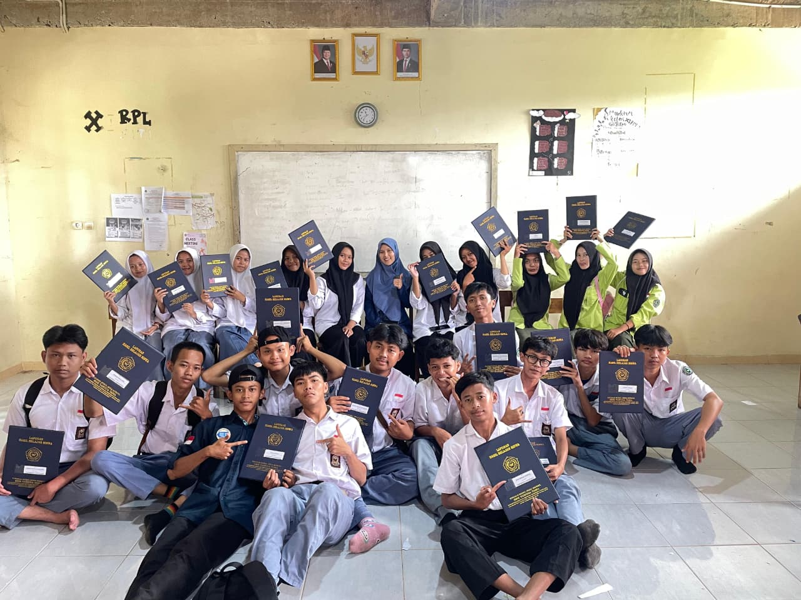
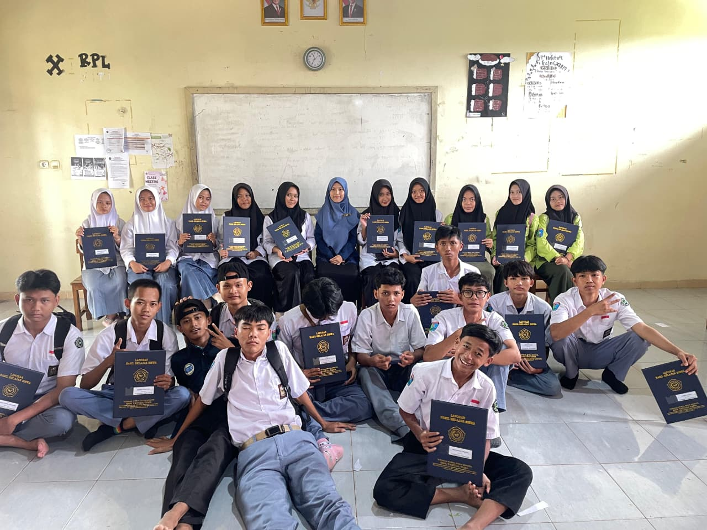
Day 4 – mengerjakan Desain Komik
Tanggal: 18 Desember 2025
Kegiatan hari ini berfokus pada proses kreatif pembuatan desain komik pendek
saya mengerjakan pembuatan layout dan ilustrasi untuk komik strip sebanyak 4 Panel
Mulai dari menentukan tema, mencari referensi tambahan, sketsa, sampai proses pewarnaan (coloring).

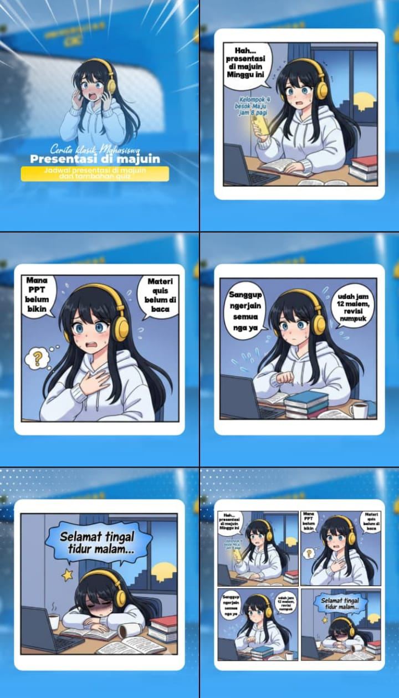
Day 5 – Pengembangan Mandiri & Observasi Lingkungan PKL
Hari Tanggal: Jum'at 19 Desember
Pada hari ini belum terdapat agenda kegiatan khusus yang diberikan oleh
pembimbing lapangan. Selama berada di lokasi PKL, saya mengisi waktu dengan
melakukan pengembangan kemampuan secara mandiri yang masih relevan dengan
bidang PKL.
Kegiatan utama yang saya lakukan adalah mempelajari aplikasi desain
Affinity by Canva untuk menambah wawasan dan keterampilan
dalam bidang desain visual, khususnya dalam pembuatan ilustrasi dan komik
digital.
Selain itu, saya juga mempelajari konsep dasar UI/UX dengan
mengembangkan tampilan website laporan PKL. Fokus pengembangan meliputi
pengaturan layout konten, navigasi antar menu, serta kenyamanan tampilan
bagi pengguna.
Kegiatan ini dilakukan sebagai bentuk inisiatif untuk meningkatkan
keterampilan desain dan pengembangan web yang mendukung jurusan serta
kebutuhan selama pelaksanaan PKL.
Dokumentasi Kegiatan
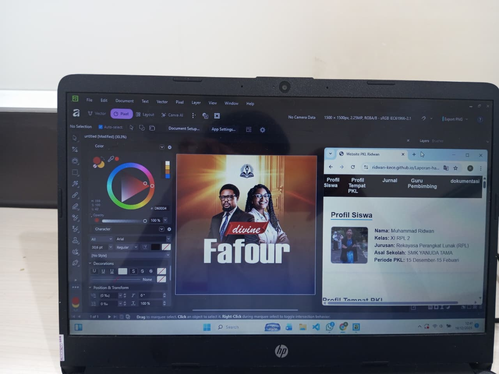
Day 5 – Dokumentasi Kegiatan Tambahan
Hari Tanggal: Jum'at 19 Desember
Observasi Presentasi Project Mahasiswa UCIC
Pada dua jam terakhir sebelum kegiatan PKL berakhir, saya mengikuti kegiatan
presentasi project mahasiswa UCIC yang berlangsung di Ruang 205 Lantai 2.
Kegiatan ini diikuti oleh beberapa tim mahasiswa yang mempresentasikan ide
bisnis dan produk digital mereka di hadapan juri internal UCIC.
Terdapat kurang lebih lima tim yang melakukan presentasi, dengan latar belakang
project yang beragam, mulai dari pengembangan teknologi berbasis Artificial
Intelligence (AI) hingga bisnis UMKM yang telah berjalan.
Beberapa project yang dipresentasikan berfokus pada pemanfaatan AI untuk
mendukung operasional bisnis, otomatisasi layanan, serta solusi digital bagi UMKM.
Selain itu, terdapat juga tim yang mempresentasikan bisnis kuliner yang telah
memiliki beberapa cabang dan memiliki rencana ekspansi apabila memperoleh
pendanaan dari pihak UCIC.
Melalui kegiatan observasi ini, saya mendapatkan wawasan tambahan mengenai
proses presentasi ide bisnis, strategi pengembangan usaha, serta cara mahasiswa
menyampaikan project mereka kepada pihak penilai atau investor.
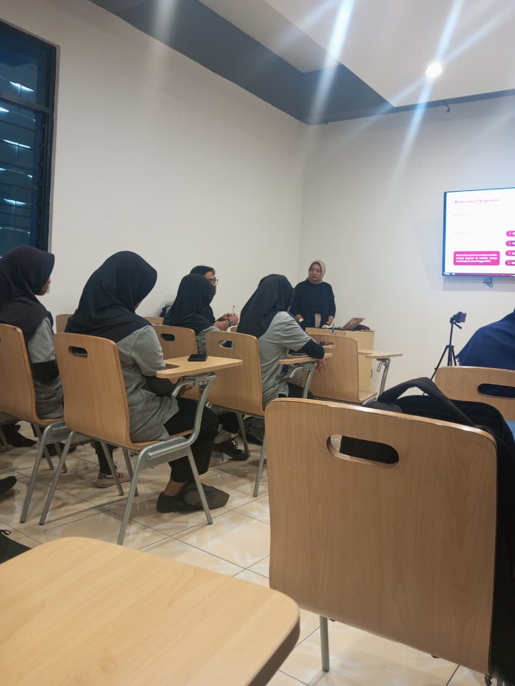
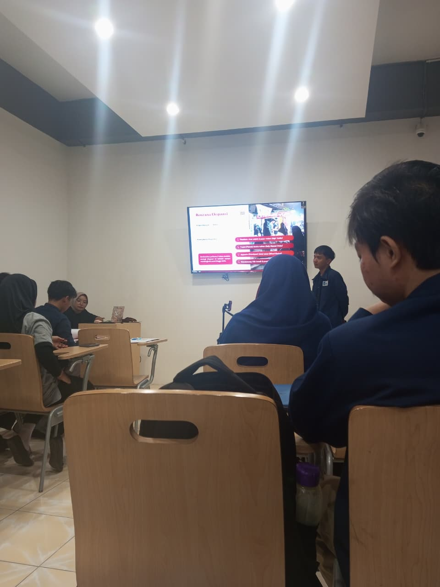
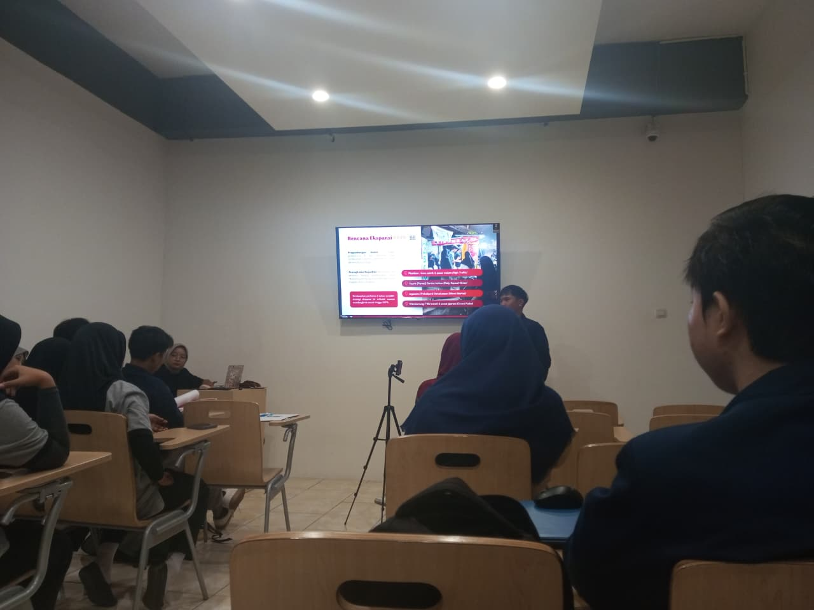
Ringkasan Kegiatan PKL Minggu 1
Pada minggu pertama pelaksanaan Praktik Kerja Lapangan (PKL) di
Universitas Catur Insan Cendekia (UCIC), saya mengikuti berbagai
kegiatan pengenalan lingkungan kerja serta proses awal pelaksanaan
tugas yang berkaitan dengan bidang desain dan pengembangan media.
Gambaran Umum Kegiatan
Kegiatan pada minggu pertama diawali dengan pengenalan lingkungan
kampus, sistem kerja, serta alur kegiatan PKL. Saya juga mulai
beradaptasi dengan suasana kerja dan memahami peran yang akan
dijalankan selama masa PKL berlangsung.
Pembagian dan Penyesuaian Tugas
Pada awal pelaksanaan PKL, saya mendapatkan tanggung jawab pada bagian
konten video, sementara rekan satu kelompok bertugas
pada bagian konten gambar/desain. Seiring berjalannya
kegiatan, khususnya mulai hari keempat, pembagian tugas tersebut
disesuaikan dengan kebutuhan di lapangan sehingga seluruh anggota
kelompok terlibat langsung dalam kegiatan desain konten.
Aktivitas yang Dilakukan
- Mempelajari alur kerja dan sistem kegiatan di lingkungan kampus UCIC.
- Mengamati dan mempelajari konten promosi serta media visual yang digunakan.
- Mempelajari aplikasi desain Affinity by Canva untuk menambah wawasan dan keterampilan desain visual.
- Mempelajari konsep dasar UI/UX dengan mengembangkan tampilan website laporan PKL.
- Mengikuti dan menyimak presentasi beberapa tim mahasiswa UCIC yang mempresentasikan ide dan proyek bisnis untuk mendapatkan investasi.
Hasil dan Pembelajaran
Dari kegiatan yang dilakukan selama minggu pertama, saya mendapatkan
pemahaman baru mengenai proses kerja di lingkungan kampus, pengembangan
ide kreatif, serta pentingnya desain dan teknologi dalam mendukung
promosi dan pengembangan proyek. Kegiatan ini juga melatih saya untuk
lebih mandiri, adaptif, dan aktif dalam memanfaatkan waktu ketika belum
terdapat agenda khusus dari pembimbing lapangan.
← Kembali ke Jurnal
Minggu 2
Day 6 – Pembuatan Aplikasi Berbasis Web
Tanggal: 22 Desember 2025
Pada hari keenam pelaksanaan PKL, saya mengerjakan pembuatan
aplikasi pengelolaan data peserta PKL berbasis web.
Kegiatan ini bukan merupakan tugas langsung dari tempat PKL,
melainkan tugas dari guru pembimbing sekolah
sebagai bentuk penguatan kompetensi di bidang pengembangan web.
Aplikasi dikembangkan menggunakan PHP sebagai
bahasa pemrograman dan MySQL sebagai basis data.
Proses pengujian aplikasi dilakukan secara lokal menggunakan
XAMPP.
Day 7 – Menunggu Instruksi & Tugas Tambahan
Tanggal: 23 Desember 2025
Pada hari ketujuh pelaksanaan Praktik Kerja Lapangan (PKL),
kegiatan di lokasi PKL relatif lebih longgar karena
belum adanya instruksi lanjutan yang diberikan.
Selama berada di lokasi PKL, saya tetap standby dan siap
apabila sewaktu-waktu dibutuhkan untuk membantu kegiatan
yang ada.
Di sela waktu menunggu, saya mendapatkan tugas tambahan
dari pihak kampus untuk membantu melakukan
rekap video kegiatan seminar.
Tugas ini dikerjakan sebagai bentuk partisipasi dan kontribusi
dalam kegiatan non-rutin di lingkungan kampus.
Kegiatan hari ini melatih kedisiplinan, tanggung jawab,
serta kesiapan dalam menghadapi situasi kerja yang dinamis,
meskipun tidak selalu diisi dengan aktivitas teknis.
Dokumentasi
Day 8 – Proses Editing Video Recap Seminar Internasional
Tanggal: 23 Desember 2025
Pada hari kedelapan pelaksanaan PKL, saya melanjutkan pengerjaan
video recap kegiatan seminar internasional Universitas Catur Insan Cendekia (UCIC).
Fokus kegiatan hari ini adalah menyusun urutan visual video
agar selaras dengan voice over (VO) yang telah disediakan.
Saya melakukan pemilihan footage yang paling relevan
dengan isi narasi untuk memperkuat pesan video.
Selain itu, saya mulai menentukan konsep alur video
dari pembukaan hingga penutup agar hasil video terlihat
rapi, informatif, dan menarik.
Day 9 – Penyempurnaan Editing & Penyesuaian Visual
Tanggal: 24 Desember 2025
Pada hari kesembilan, saya melanjutkan proses penyempurnaan
video recap seminar internasional UCIC.
Kegiatan yang dilakukan meliputi penambahan transisi antar klip,
pengaturan timing visual dengan voice over,
serta penyesuaian tampilan teks agar mudah dibaca
dan sesuai dengan identitas visual kampus.
Proses ini dilakukan untuk memastikan video memiliki alur
yang jelas, nyaman ditonton, dan mampu menyampaikan informasi
secara efektif kepada audiens.
Day 10 – Finishing & Pengiriman Video
Tanggal: 25 Desember 2025
Pada hari kesepuluh, saya menyelesaikan tahap akhir
pembuatan video recap seminar internasional UCIC.
Kegiatan difokuskan pada pengecekan ulang keseluruhan video,
memastikan sinkronisasi antara audio dan visual,
serta melakukan perbaikan kecil pada bagian transisi dan teks.
Setelah proses finishing selesai, video kemudian dirender
dan dikirimkan sesuai dengan ketentuan serta batas waktu
yang telah ditentukan.
Ringkasan Kegiatan PKL Minggu 2
Pada minggu kedua pelaksanaan Praktik Kerja Lapangan (PKL) di
Universitas Catur Insan Cendekia (UCIC), kegiatan difokuskan pada
proses produksi dan penyelesaian konten video, khususnya video recap
seminar internasional yang diselenggarakan oleh pihak kampus.
Gambaran Umum Kegiatan
Kegiatan pada minggu kedua merupakan lanjutan dari proses adaptasi
lingkungan kerja pada minggu sebelumnya. Pada minggu ini, saya mulai
terlibat lebih aktif dalam kegiatan teknis, khususnya pada proses
pengolahan konten multimedia berupa video.
Pembagian dan Penyesuaian Tugas
Dalam pelaksanaan kegiatan, saya berfokus pada bagian
editing video, meliputi pengaturan visual, transisi,
serta penyesuaian tampilan teks dengan voice over. Sementara itu,
koordinasi dengan rekan kelompok tetap dilakukan untuk memastikan
hasil akhir sesuai dengan kebutuhan dan arahan kegiatan.
Aktivitas yang Dilakukan
- Melakukan pemilihan dan pengelompokan footage acara seminar internasional.
- Mengedit video dengan menyesuaikan alur visual dan voice over.
- Menambahkan transisi dan efek visual agar video terlihat lebih rapi dan profesional.
- Menyesuaikan tampilan teks agar mudah dibaca dan sesuai dengan identitas visual kampus.
- Melakukan pengecekan ulang hasil editing sebelum proses pengiriman.
Hasil dan Pembelajaran
Dari kegiatan yang dilakukan selama minggu kedua, saya memperoleh
pengalaman dalam proses editing video secara lebih terstruktur,
memahami pentingnya sinkronisasi antara audio dan visual, serta
meningkatkan ketelitian dalam menyelesaikan tugas dengan batas waktu
tertentu. Kegiatan ini juga melatih tanggung jawab dan manajemen waktu
dalam menyelesaikan pekerjaan berbasis multimedia.
← Kembali ke Jurnal
Minggu 3
Day 11 – Libur Nasional & Evaluasi Kegiatan PKL
Tanggal: 29 Desember 2025
Pada hari kesebelas pelaksanaan PKL, kegiatan dilaksanakan secara terbatas
dikarenakan masih dalam suasana libur nasional Natal dan menjelang Tahun Baru.
Pada hari ini, saya melakukan evaluasi terhadap kegiatan PKL yang telah
dilaksanakan pada minggu sebelumnya, khususnya terkait progres pembuatan
konten video dan pengelolaan website jurnal PKL.
Selain itu, dilakukan perencanaan awal untuk kegiatan PKL minggu ketiga,
termasuk penyesuaian jadwal kerja dan rencana tindak lanjut setelah masa
libur berakhir.
Day 12 – Diskusi Ide Aplikasi & Perencanaan Laporan PKL
Tanggal: 30 Desember 2025
Pada hari kedua di minggu ketiga PKL, saya melakukan diskusi bersama rekan
kelompok mengenai rencana pengembangan aplikasi yang akan dijadikan sebagai
topik laporan PKL.
Diskusi difokuskan pada evaluasi penolakan ide aplikasi sebelumnya,
identifikasi permasalahan yang relevan, serta penentuan arah aplikasi yang
lebih sesuai dengan kebutuhan dan kondisi tempat PKL.
Pada hari ini belum dilakukan pengembangan teknis dikarenakan adanya kendala
pada perangkat laptop yang sedang dipersiapkan untuk proses perbaikan.
Day 13 – Kendala Perangkat & Persiapan Servis Laptop
Tanggal: 31 Desember 2025
Pada hari ketiga minggu ketiga PKL, kegiatan difokuskan pada identifikasi
kendala teknis pada perangkat kerja, yaitu laptop yang mengalami gangguan
pada bagian layar.
Saya melakukan persiapan untuk servis perangkat laptop serta menyusun kembali
rencana lanjutan kegiatan PKL, termasuk pembaruan jurnal PKL pada website dan
persiapan awal pengembangan aplikasi PKL.
Kegiatan teknis sementara ditunda hingga perangkat kembali berfungsi normal.
Day 14 – Libur Tahun Baru
Tanggal: 1 Januari 2026
Day 15 – Libur Tahun Baru
Tanggal: 2 Januari 2026
Ringkasan Kegiatan PKL Minggu 3
Pada minggu ketiga pelaksanaan Praktik Kerja Lapangan (PKL) di
Universitas Catur Insan Cendekia (UCIC), kegiatan PKL mengalami
penyesuaian dikarenakan adanya libur nasional Natal dan Tahun Baru,
serta kendala teknis pada perangkat kerja.
Gambaran Umum Kegiatan
Aktivitas PKL pada minggu ini tidak sepenuhnya berjalan seperti
minggu sebelumnya. Beberapa kegiatan dilakukan secara terbatas,
sementara sebagian lainnya difokuskan pada evaluasi, perencanaan,
dan persiapan lanjutan kegiatan PKL setelah masa libur berakhir.
Pembagian dan Penyesuaian Tugas
Pada minggu ketiga, belum terdapat pembagian tugas teknis secara
langsung karena adanya libur nasional serta kendala pada perangkat
laptop. Namun demikian, saya dan rekan kelompok tetap melakukan
diskusi untuk menentukan arah kegiatan dan topik aplikasi yang
akan dijadikan sebagai laporan PKL.
Aktivitas yang Dilakukan
- Melakukan evaluasi terhadap kegiatan PKL pada minggu sebelumnya.
- Diskusi bersama rekan kelompok terkait ide dan topik aplikasi PKL.
- Mengidentifikasi permasalahan dari penolakan ide aplikasi sebelumnya.
- Menyusun rencana tindak lanjut kegiatan PKL setelah masa libur.
- Mempersiapkan proses servis laptop akibat kendala pada perangkat kerja.
Hasil dan Pembelajaran
Dari kegiatan pada minggu ketiga, saya memahami pentingnya evaluasi
dan perencanaan dalam pelaksanaan PKL. Meskipun kegiatan teknis
belum dapat dilaksanakan secara optimal, minggu ini memberikan
pembelajaran mengenai kesiapan menghadapi kendala serta pentingnya
komunikasi dan koordinasi dalam tim.
← Kembali ke Jurnal
Minggu 4
Day 16 – Menunggu Arahan & Inisiatif Penyusunan Laporan
Tanggal: 5 Januari 2026
Pada hari pertama Minggu keempat pelaksanaan PKL, belum terdapat instruksi
atau tugas khusus dari pembimbing lapangan. Saya tetap berada di lingkungan
PKL dan siap apabila sewaktu-waktu dibutuhkan.
Karena belum adanya kegiatan lapangan, saya berinisiatif memanfaatkan waktu
dengan mulai mengerjakan dan merapikan laporan PKL agar tersusun dengan baik
dan sesuai ketentuan.
Day 17 – Redesain Sertifikat
Tanggal: 6 Januari 2026
Pada hari kedua Minggu keempat, saya mengerjakan kegiatan redesain sertifikat
dengan melakukan penyesuaian tata letak, pemilihan warna, pengaturan
tipografi, serta perapihan elemen visual.
Redesain dilakukan dengan mempertimbangkan kesesuaian desain dengan identitas
visual instansi serta kenyamanan saat dibaca.
Day 18 – Izin Sakit
Tanggal: 7 Januari 2026
Pada hari ketiga Minggu keempat, saya tidak dapat mengikuti kegiatan PKL
dikarenakan kondisi kesehatan yang kurang baik, yaitu sakit batuk dan pilek.
Ketidakhadiran ini telah disampaikan kepada pihak terkait sebagai bentuk izin
resmi. Saya beristirahat untuk memulihkan kondisi agar dapat kembali
mengikuti kegiatan PKL dengan baik.
Day 19 – Penyusunan Laporan PKL Bersama Tim
Tanggal: 8 Januari 2026
Pada hari keempat Minggu keempat, saya kembali mengikuti kegiatan PKL dan
melakukan penyusunan laporan PKL bersama rekan satu kelompok, Dede Aditya.
Kegiatan meliputi pengecekan isi laporan, perbaikan penulisan, serta
penyusunan struktur laporan agar lebih sistematis dan sesuai format.
Day 20 – Libur PKL
Tanggal: 9 Januari 2026
Pada hari kelima Minggu keempat, saya tidak mengikuti kegiatan PKL karena
kondisi tertentu sehingga tidak memungkinkan untuk hadir di lokasi PKL.
Hari ini dimanfaatkan untuk beristirahat dan mempersiapkan diri agar dapat
kembali mengikuti kegiatan PKL dengan kondisi yang lebih siap.
Ringkasan Kegiatan PKL Minggu 4
Pada minggu keempat pelaksanaan Praktik Kerja Lapangan (PKL) di
Universitas Catur Insan Cendekia (UCIC), kegiatan mulai kembali
berjalan secara bertahap setelah masa libur nasional berakhir.
Aktivitas difokuskan pada pekerjaan desain serta penyusunan laporan PKL.
Gambaran Umum Kegiatan
Minggu keempat diisi dengan kegiatan yang bersifat produktif namun
fleksibel. Beberapa hari diisi dengan pengerjaan tugas desain,
sementara hari lainnya dimanfaatkan untuk penyusunan dan perapihan
laporan PKL, baik secara mandiri maupun bersama rekan kelompok.
Pembagian dan Penyesuaian Tugas
Pada minggu ini, saya mengerjakan tugas desain berupa redesain
sertifikat serta berkontribusi dalam penyusunan laporan PKL bersama
rekan satu kelompok. Pembagian tugas dilakukan secara kolaboratif
agar laporan dapat tersusun dengan rapi dan sesuai format.
Aktivitas yang Dilakukan
- Menunggu arahan pembimbing lapangan sambil mengerjakan laporan PKL.
- Melakukan redesain sertifikat dengan penyesuaian visual dan tipografi.
- Menyusun dan memperbaiki laporan PKL bersama rekan kelompok.
- Melakukan pengecekan isi laporan agar lebih sistematis dan rapi.
- Menyesuaikan kembali kesiapan fisik setelah izin sakit.
Hasil dan Pembelajaran
Dari kegiatan minggu keempat, saya memperoleh pengalaman dalam
bekerja secara mandiri maupun tim, khususnya dalam penyusunan
laporan PKL dan pekerjaan desain. Kegiatan ini melatih kedisiplinan,
tanggung jawab, serta kemampuan bekerja secara terstruktur meskipun
dalam kondisi kegiatan yang belum sepenuhnya padat.
← Kembali ke Jurnal
Day 21 – Penyusunan Dokumen Cetak (Pamflet)
Tanggal: 12 Januari 2026
Pada hari pertama Minggu kelima pelaksanaan PKL, saya melaksanakan kegiatan
penyusunan dokumen cetak berupa pamflet. Kegiatan ini dilakukan dengan cara
memotong (menggunting) hasil fotokopian pamflet, kemudian menyusun dan
menyatukan bagian depan dan belakang agar rapi dan siap digunakan.
Melalui kegiatan ini, saya belajar untuk lebih teliti dan rapi dalam proses
penanganan dokumen cetak, serta memahami alur penyusunan media cetak sederhana.
Dokumentasi
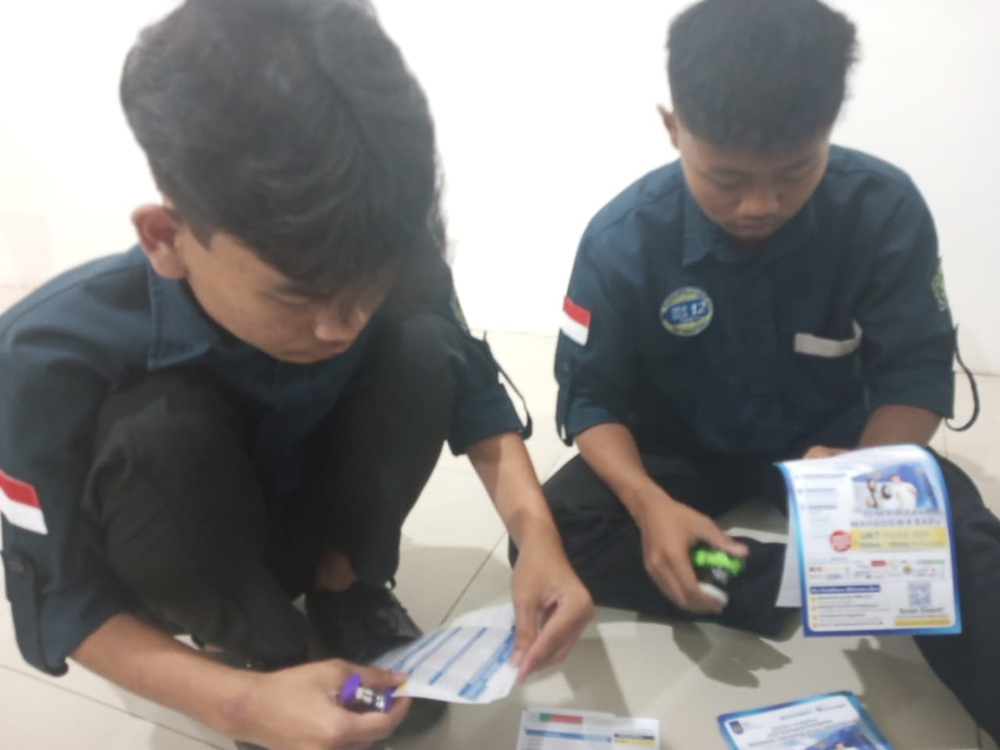
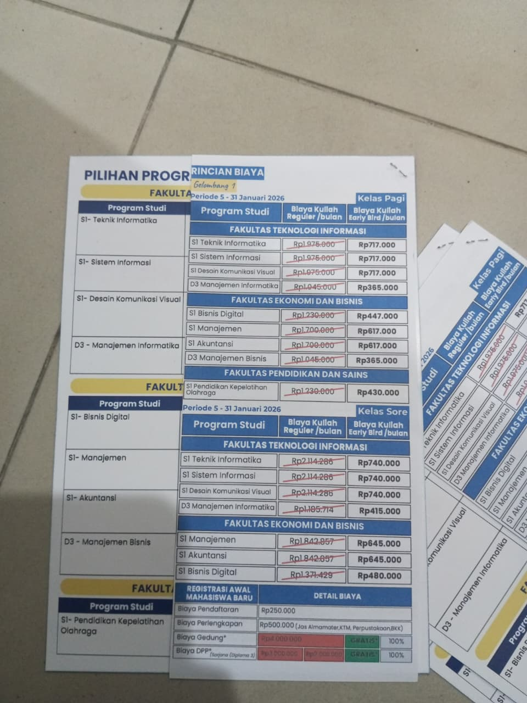
Day 22 – Penyelesaian Pamflet Cetak
Tanggal: 13 Januari 2026
Pada hari ini, kegiatan PKL masih berfokus pada penyelesaian pamflet cetak.
Pekerjaan dilakukan mulai dari memotong bahan pamflet yang masih terpisah,
kemudian menyusun dan menempel bagian depan dan belakang.
Jumlah pamflet yang dikerjakan cukup banyak sehingga kegiatan berlangsung
hingga mendekati waktu pulang. Pekerjaan ini membutuhkan ketelitian agar
hasil akhir rapi dan sesuai dengan kebutuhan.
Day 23 – Pengumpulan Data dan Riset Awal AI
Tanggal: 14 Januari 2026
Pada hari ke-23 pelaksanaan PKL, kegiatan difokuskan pada pengumpulan data
dan pencarian informasi terkait Artificial Intelligence (AI).
Data yang dicari meliputi jenis-jenis AI serta penerapannya di berbagai
bidang, khususnya di lingkungan pendidikan dan universitas.
Kegiatan dilakukan dengan menelusuri sumber digital dan mencatat informasi
penting sebagai bahan awal yang nantinya akan diolah dan disusun secara
lebih rapi. Kegiatan ini bertujuan untuk menambah wawasan serta melatih
kemampuan dalam mengolah data selama PKL.
Dokumentasi
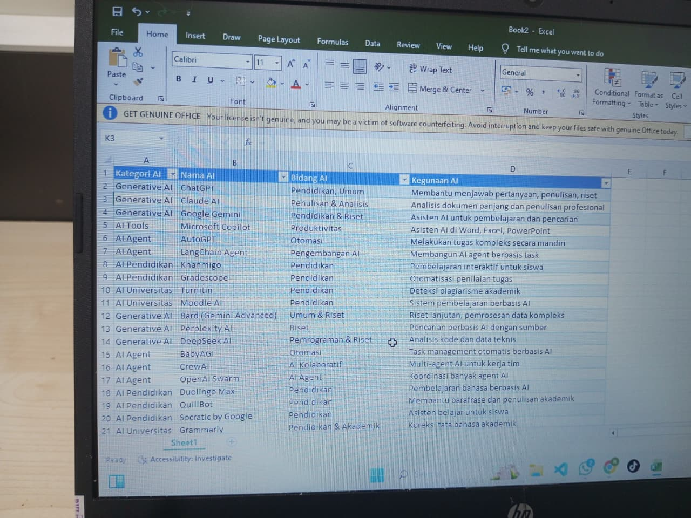

Day 24 – Penyelesaian Pamflet dan Banner Cetak
Tanggal: 15 Januari 2026
Pada hari ke-24 pelaksanaan PKL, kegiatan yang dilakukan masih berfokus
pada penyelesaian pamflet dan banner cetak.
Pekerjaan meliputi proses memotong bahan cetakan, menyusun bagian depan
dan belakang, serta menempel hasil potongan agar rapi dan siap digunakan
untuk keperluan promosi.
Kegiatan ini membutuhkan ketelitian dan kesabaran karena jumlah bahan
yang dikerjakan cukup banyak. Proses penyelesaian dilakukan secara
bertahap agar hasil akhir sesuai dengan kebutuhan.
Day 25 – Libur PKL
Tanggal: 16 Januari 2026
Pada hari ke-25 pelaksanaan PKL, kegiatan diliburkan karena memasuki hari
Jumat dan dilanjutkan dengan libur akhir pekan.
Tidak terdapat kegiatan PKL yang dilakukan pada hari ini.
Ringkasan Kegiatan PKL Minggu 5
Pada minggu kelima pelaksanaan Praktik Kerja Lapangan (PKL), kegiatan yang
dilakukan mencakup pekerjaan promosi cetak, pengumpulan data, serta
pelaksanaan tugas riset terkait Artificial Intelligence (AI).
Gambaran Umum Kegiatan
Kegiatan pada minggu ini diawali dengan penyelesaian pamflet dan banner
cetak yang digunakan untuk keperluan promosi. Selain itu, terdapat hari
libur dan izin yang disebabkan oleh kondisi kesehatan serta kegiatan resmi
dari sekolah.
Aktivitas yang Dilakukan
- Melanjutkan proses pemotongan dan penyusunan pamflet serta banner cetak.
- Melakukan tugas riset awal terkait Artificial Intelligence (AI).
- Mengumpulkan dan mencatat data AI untuk berbagai bidang, khususnya pendidikan.
- Mengikuti ketentuan libur PKL dan izin sesuai kondisi yang ada.
Hasil dan Pembelajaran
Dari kegiatan minggu kelima ini, saya memperoleh pengalaman dalam
menyelesaikan pekerjaan promosi cetak secara teliti serta mulai memahami
gambaran umum perkembangan Artificial Intelligence dan penerapannya.
Kegiatan ini juga melatih kedisiplinan, tanggung jawab, dan kemampuan
mengelola waktu selama pelaksanaan PKL.
← Kembali ke Jurnal
Minggu 6
Day 26 – Izin Tidak Masuk PKL
Tanggal: 19 Januari 2026
Pada hari ke-26 pelaksanaan PKL, saya tidak dapat mengikuti kegiatan PKL
dikarenakan kondisi kesehatan yang kurang baik.
Ketidakhadiran ini telah disampaikan sebagai izin, dan hari tersebut
dimanfaatkan untuk beristirahat agar dapat kembali mengikuti kegiatan PKL
dengan kondisi yang lebih baik.
Day 27 – Libur PKL karena Acara Resmi Sekolah
Tanggal: 20 Januari 2026
Pada hari ke-27 pelaksanaan Praktik Kerja Lapangan (PKL), kegiatan PKL
diliburkan karena adanya acara resmi dari pihak sekolah, yaitu kegiatan
pengambilan bantuan Program Indonesia Pintar (PIP).
Libur ini dilaksanakan berdasarkan surat pemberitahuan resmi dari sekolah
yang menyatakan bahwa siswa tidak melaksanakan kegiatan PKL pada hari
tersebut.
Dengan adanya surat resmi ini, kegiatan PKL pada hari tersebut dinyatakan
libur dan tidak terdapat aktivitas kerja di tempat PKL.
Dokumentasi
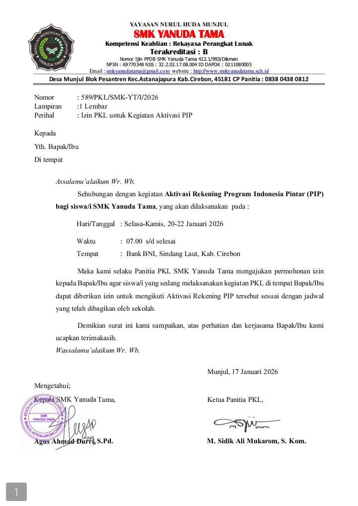
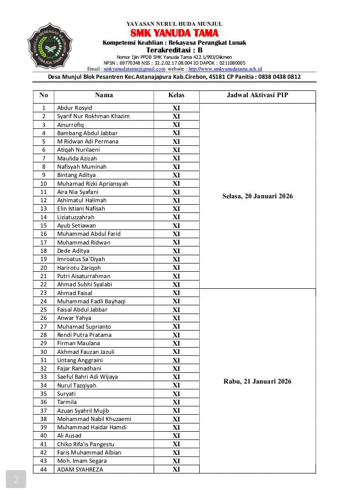
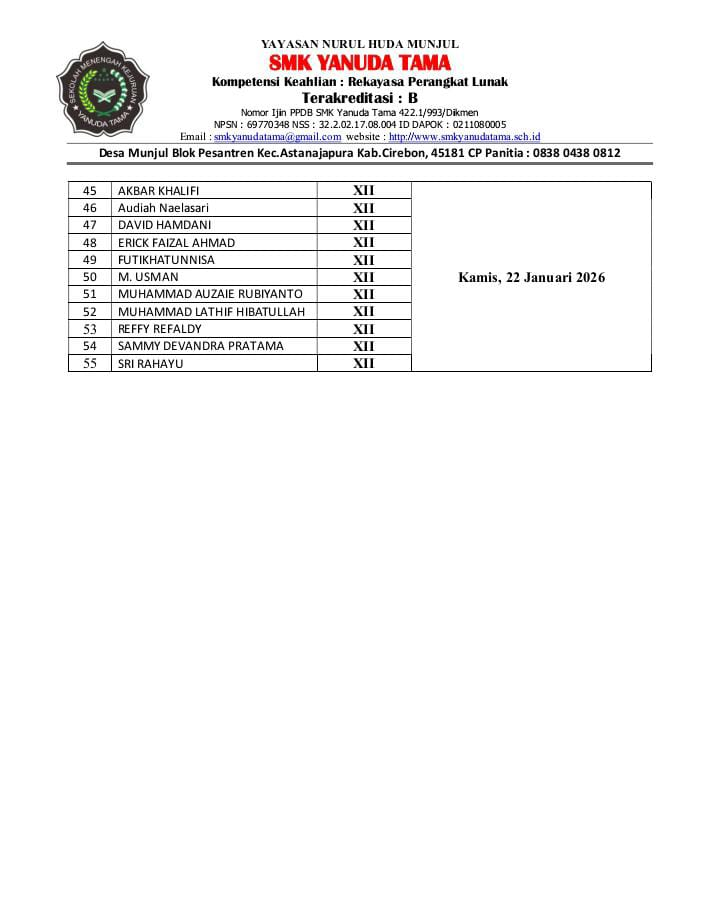
Day 28 – Melanjutkan Tugas Riset Artificial Intelligence
Tanggal: 21 Januari 2026
Pada hari ke-28 pelaksanaan PKL, saya kembali mengikuti kegiatan PKL dan
melanjutkan tugas yang sebelumnya diberikan oleh Kak Kevas.
Kegiatan yang dilakukan meliputi pencarian dan pengumpulan data terkait
Artificial Intelligence (AI), termasuk jenis-jenis AI, kegunaannya di
berbagai bidang, serta penerapannya di lingkungan pendidikan dan
universitas.
Data yang dikumpulkan nantinya akan diolah dan digunakan sebagai bahan
pendukung untuk kebutuhan selanjutnya.